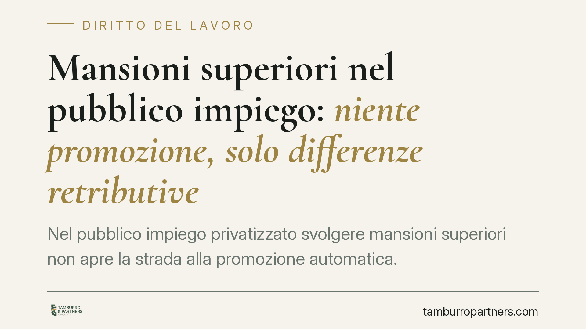

Mansioni superiori nel pubblico impiego: niente promozione, solo differenze retributive
Nel pubblico impiego privatizzato svolgere mansioni superiori non apre la strada alla promozione automatica. Una recente pronuncia del Tribunale di Catanzaro ribadisce che al dipendente spettano solo le differenze retributive previste dall'art. 52 del D.lgs. 165/2001. Un principio consolidato ma spesso frainteso, che segna una distanza netta rispetto alle regole del lavoro privato e incide su aspettative, strategie difensive e tempi di azione.

Il caso
Un dipendente pubblico, dopo aver svolto per un periodo prolungato compiti riconducibili a una qualifica superiore a quella di inquadramento, agisce in giudizio chiedendo non solo le differenze di retribuzione ma anche il riconoscimento della qualifica più elevata.
Il Tribunale di Catanzaro, con una recente pronuncia (sent. n. 552, della quale si raccomanda la verifica degli estremi esatti presso la cancelleria), accoglie la domanda retributiva ma respinge quella di inquadramento. La decisione non introduce novità, bensì conferma un orientamento ormai stabile.
Inquadramento normativo
Il riferimento è l'art. 52 del D.lgs. 165/2001 (Testo unico sul pubblico impiego). La norma stabilisce che il prestatore di lavoro deve essere adibito alle mansioni per cui è stato assunto o a quelle equivalenti nell'ambito dell'area di inquadramento.
Lo stesso articolo prevede che, nel caso di assegnazione a mansioni superiori, il dipendente abbia diritto al trattamento economico corrispondente all'attività effettivamente svolta, per il periodo di effettiva prestazione. Nessun automatismo di carriera: la retribuzione segue la mansione, ma la qualifica no.
La ragione è costituzionale. L'art. 97 della Costituzione impone che l'accesso agli impieghi pubblici avvenga, di regola, mediante concorso. Riconoscere la promozione a chi ha semplicemente svolto compiti superiori aggirerebbe questo principio, trasformando un comportamento di fatto in una scorciatoia verso la qualifica.
Qui sta la differenza sostanziale con il lavoro privato. L'art. 2103 del Codice civile prevedeva un meccanismo di assegnazione definitiva alla qualifica superiore dopo un certo periodo di svolgimento delle relative mansioni. Dopo la riforma del Jobs Act (D.lgs. 81/2015) questo regime è stato rivisto: l'acquisizione della qualifica superiore opera salvo diversa volontà del lavoratore e nei limiti fissati dalla contrattazione. In ogni caso, tale disciplina non si applica al pubblico impiego, dove il vincolo concorsuale prevale.
Il principio ribadito
La sintesi è netta: nel pubblico impiego privatizzato lo svolgimento di mansioni superiori attribuisce il diritto alle differenze retributive, non il diritto alla promozione.
La pronuncia tocca anche il tema speculare, quello dell'adibizione a mansioni inferiori. L'assegnazione a compiti di livello più basso è ammessa solo nei casi tipizzati e per finalità consentite dall'ordinamento. Fuori da questi limiti, l'assegnazione è illegittima e può fondare una domanda risarcitoria e il ripristino delle mansioni dovute.
Implicazioni pratiche
Per il dipendente pubblico il messaggio è chiaro: documentare lo svolgimento di mansioni superiori serve a ottenere il corretto trattamento economico, non a scalare l'organigramma.
Due aspetti meritano attenzione.
Il primo è l'onere della prova. Spetta al lavoratore dimostrare di aver svolto in concreto, e in modo prevalente, i compiti propri della qualifica superiore. Non basta un ordine di servizio generico: contano le attività effettivamente eseguite, la responsabilità assunta, la continuità della prestazione.
Il secondo è la prescrizione. Il diritto alle differenze retributive si prescrive nei termini ordinari previsti per i crediti di lavoro. Attendere troppo significa perdere le somme relative ai periodi più risalenti. La tempestività dell'azione, quindi, non è un dettaglio ma un fattore economico diretto.
Per l'amministrazione, il principio delimita il rischio: l'esposizione è di natura retributiva e risarcitoria, non implica obblighi di inquadramento. Resta però la necessità di gestire con ordine le assegnazioni temporanee, per evitare contenziosi seriali.
Cosa fare in concreto
- Raccogliere e conservare ordini di servizio, mail, atti firmati e ogni documento che attesti le mansioni effettivamente svolte e il periodo.
- Ricostruire con precisione le date di inizio e fine dello svolgimento dei compiti superiori, per calcolare il periodo utile e le somme spettanti.
- Verificare quali periodi siano ancora azionabili alla luce dei termini di prescrizione dei crediti di lavoro.
- Distinguere la domanda retributiva da quella, non accoglibile nel pubblico impiego, di inquadramento nella qualifica superiore.
- Considerare che una valutazione preventiva della posizione consente di stimare l'importo delle differenze e la solidità del quadro probatorio.
Disclaimer
Contributo informativo a cura di Tamburro & Partners Avvocati - Avv. Giuseppe Tamburro. Non costituisce parere legale.
Ogni storia di lavoro ha i suoi tempi.
Se gestisci HR e vuoi un confronto su contenzioso, ispezioni o licenziamenti, scrivi allo studio. Ti rispondiamo entro un giorno lavorativo.